Microscopy
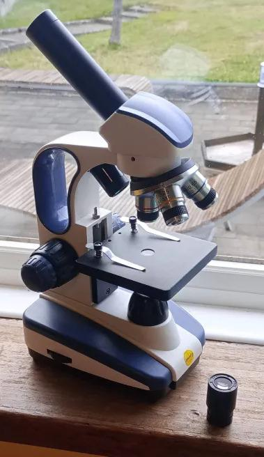
My Interest
I have always had some small interest in microscopy, however my interest peaked when I watched the videos of a YouTube channel called Journey to the Microcosmos, of which used some amazing microscopes, techniques, facts and storytelling. I was enthralled by the microscopic world, so I purchased my own microscope and started to grab random things to see what they look like under the lens. Not all of my finds are documented here, as most of it was purely for my own joy. Not out of any need to photograph or show to others. However I do have a small collection of photos, drawings and more from my microscope, and I am sure when I find more things to put under the light, this page will grow.
My Microscope
I own a SW200DL Swift Microscope. For those not in the know about microscopes, it's on par with what you would have used in secondary school for looking at onion or red blood cells. It has objective lenses of magnification 4x, 10x and 40x, with eyepieces of 10x and 25x for a maximum magnification of 1000x. It is quite easily moddable, as I have 3D-printed some small modifications to the frame, such as a replacement for the atrocious pinhole wheel, which has been changed for a holder for backdrops and filters. It's easy to take apart and repair, and has very simple electronic internals.

From pond water, a strand of plant material that has caught a bubble. What's inside the bubble? Your guess is as good as mine...
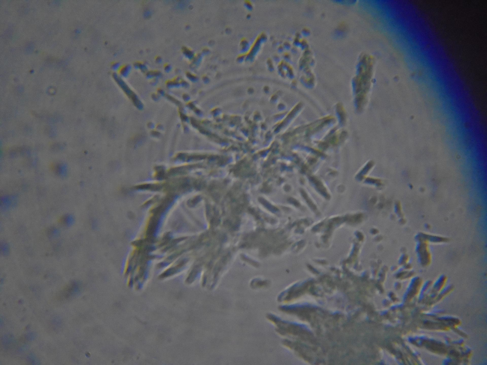
Also from pond water, strange shard-like structures. What could they possibly be?

My lymph, obtained from a blister

I accidentally left out the previous slide of lymph overnight. Next morning, it has crystallised into stunning patterns
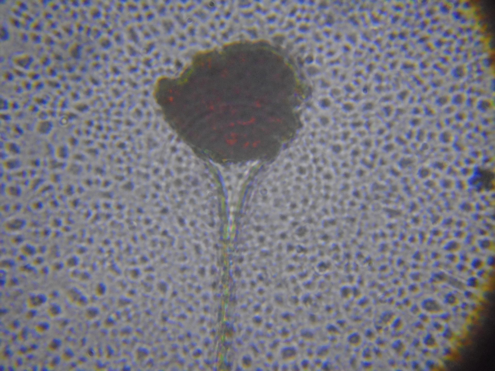
A 1000x magnification of the red dot in the image above. A clot of blood perhaps?
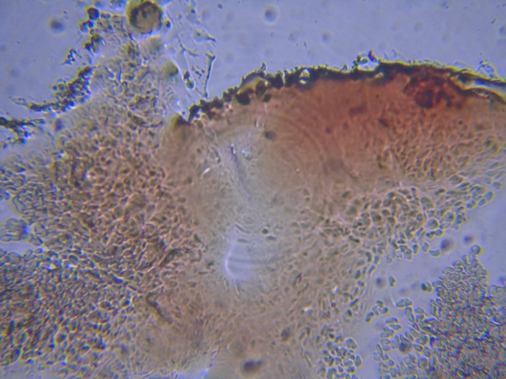
A slide of my blood, atrociously prepared
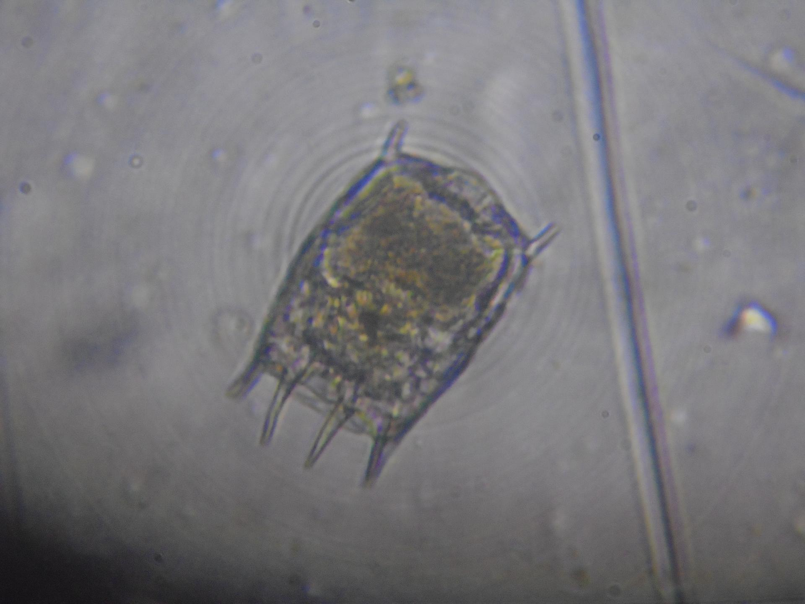
A rotifer, found in pond water

The same rotifer, now dead
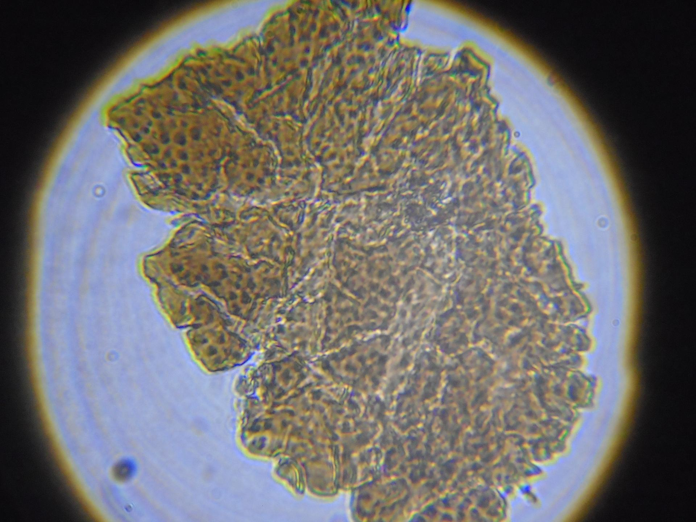
Scab
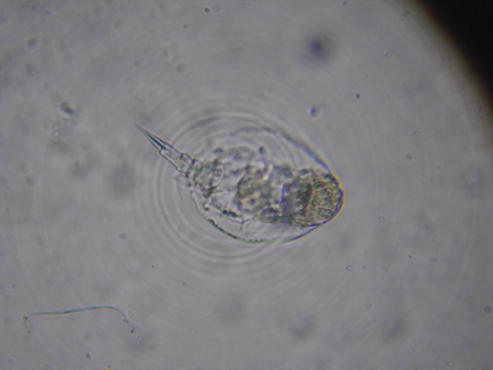
An unknown animal in pond water, likely a rotifer or close relative
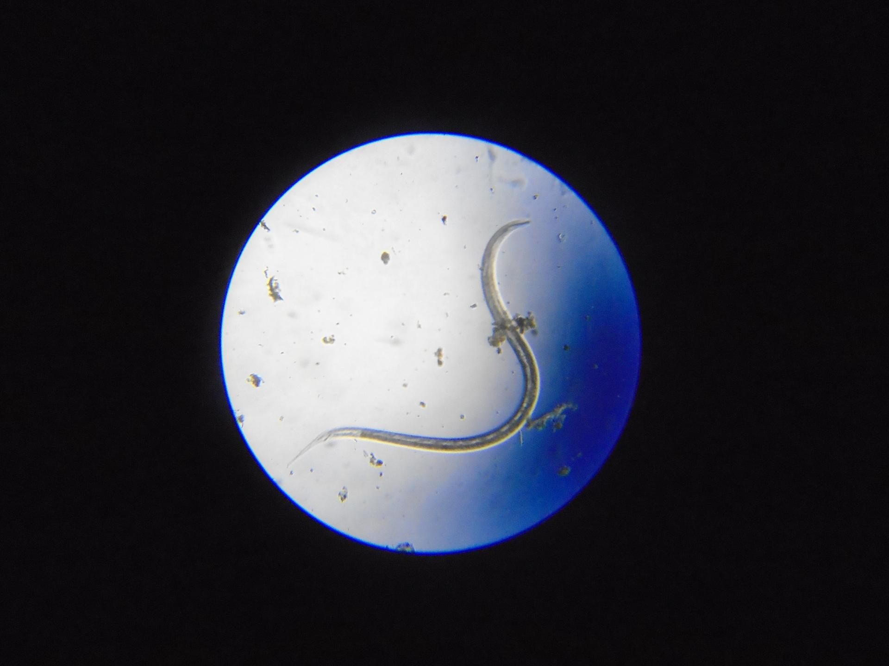
A Nematode, a worm-like animal that can just barely be seen with the naked eye
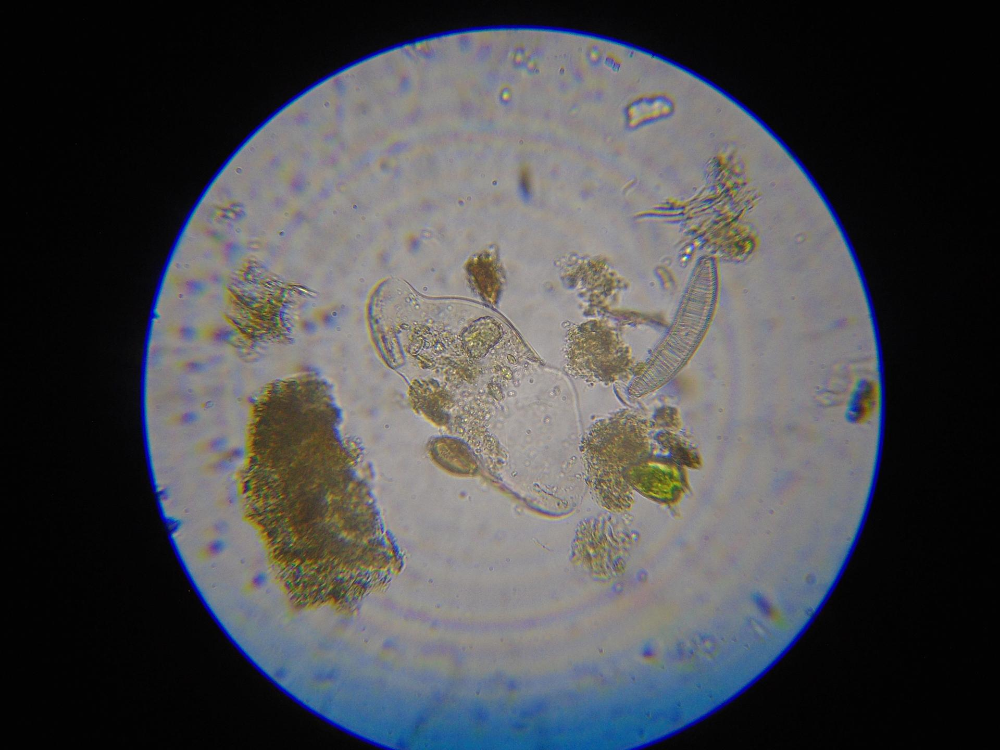
A collection of plants and structures found in pond water
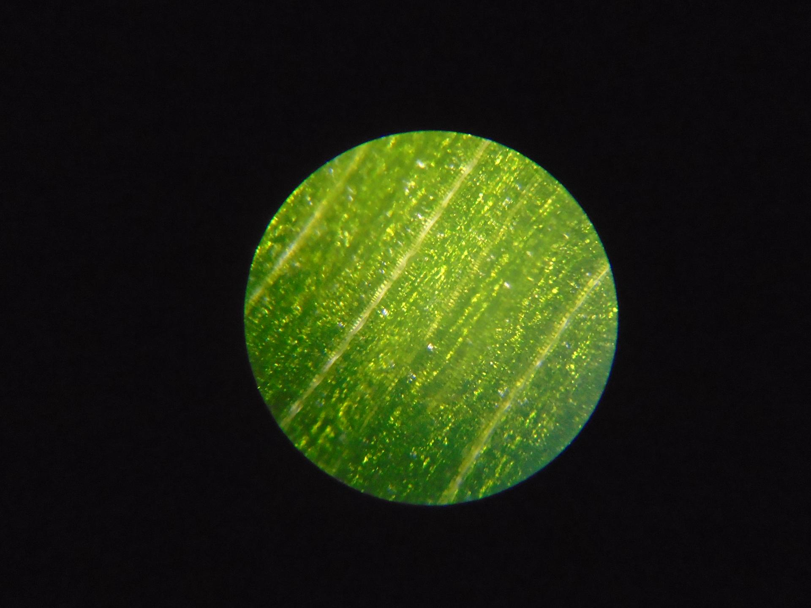
A blade of common grass
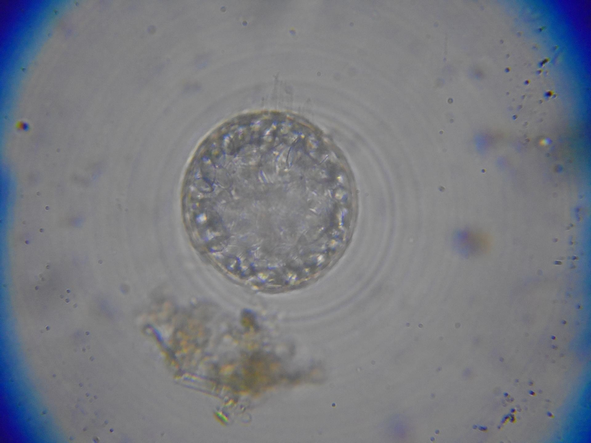
A single cell organism found in pond water
A Nematode
The previously seen rotifer-like animal, skirting around the cover-slip boundary
Many single-celled organisms in pond water